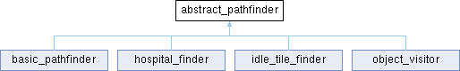

- Generated by

|
CorsixTH engine (the C++ part)
Open source implementation of Theme Hospital
|
#include <th_pathfind.h>

Public Member Functions | |
| abstract_pathfinder (pathfinder *pf) | |
| virtual | ~abstract_pathfinder ()=default |
| path_node * | init (const level_map *pMap, int iStartX, int iStarty) |
| Initialize the path finder. | |
| bool | search_neighbours (path_node *pNode, map_tile_flags flags, int iWidth) |
| Expand the pNode to its neighbours. | |
| void | record_neighbour_if_passable (path_node *pNode, map_tile_flags neighbour_flags, path_node *pNeighbour) |
| Examine the neighbour tile, and add it to the heap if it can be entered. | |
| virtual int | guess_distance (path_node *pNode)=0 |
| Guess distance to the destination for pNode. | |
| virtual bool | try_node (path_node *pNode, map_tile_flags flags, path_node *pNeighbour, travel_direction direction)=0 |
| Try the pNeighbour node. | |
Protected Attributes | |
| pathfinder * | parent |
| Path finder parent object, containing shared data. | |
| const level_map * | map |
| Map being searched. | |
Base class of the path finders.
| abstract_pathfinder::abstract_pathfinder | ( | pathfinder * | pf | ) |
|
virtualdefault |
|
pure virtual |
Guess distance to the destination for pNode.
| pNode | Node to fill. |
Implemented in basic_pathfinder, hospital_finder, idle_tile_finder, and object_visitor.
Initialize the path finder.
| pMap | Map to search on. |
| iStartX | X coordinate of the start position. |
| iStarty | Y coordinate of the start position. |
| void abstract_pathfinder::record_neighbour_if_passable | ( | path_node * | pNode, |
| map_tile_flags | neighbour_flags, | ||
| path_node * | pNeighbour ) |
Examine the neighbour tile, and add it to the heap if it can be entered.
| pNode | Node to expand. |
| neighbour_flags | Flags of the neighbour. |
| pNeighbour | The node of the neighbour. |
| bool abstract_pathfinder::search_neighbours | ( | path_node * | pNode, |
| map_tile_flags | flags, | ||
| int | iWidth ) |
Expand the pNode to its neighbours.
| pNode | Node to expand. |
| flags | Flags of the node. |
| iWidth | Width of the map. |
No need to check for the node being on the map edge, as the N/E/S/W flags are set as to prevent travelling off the map (as well as to prevent walking through walls).
|
pure virtual |
Try the pNeighbour node.
| pNode | Source node. |
| flags | Flags of the node. |
| pNeighbour | Neighbour of pNode to try. |
| direction | Direction of travel. |
Implemented in basic_pathfinder, hospital_finder, idle_tile_finder, and object_visitor.
|
protected |
Map being searched.
|
protected |
Path finder parent object, containing shared data.